Loans Onboarding
Revamp
End-to-end redesign of the Credit Builder Loan onboarding to increase loan takeup for a US-based fintech.


The Problem
Users showed initial interest but dropped off before completing the loan application. Two core UX failures drove this.
Confusion about how funds work
Users didn't understand why money was held in a Credit Reserve Account, they expected to receive the full approved amount.
Flow was too long
There are 9 steps from landing to completion. Each extra step increased the chance of abandonment before approval.
What Changed
Before — 9 steps
After — 6 steps
Outcome
Decision 1: Reducing Flow Length
Streamlining the offer flow
The original flow had too many steps and 10–20% of users dropped off at each screen. To optimise the flow, we explored which screens could logically be combined, starting with the most obvious candidate, then landing on a better solution after identifying a key concern.
The original flow had separate screens for everything, users had to navigate through each step sequentially with no sense of what was related.
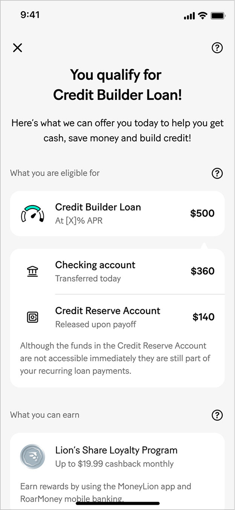
Offer screen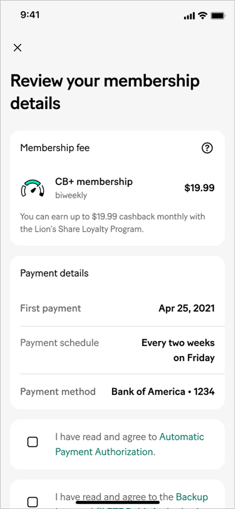
Membership onboarding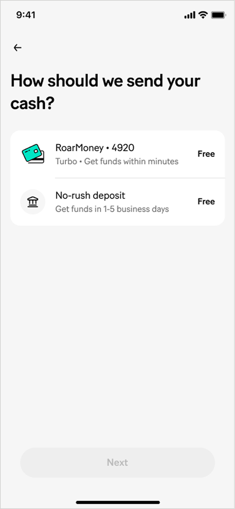
Funds destinationToo many sequential screens for what is conceptually one moment, the user accepting their loan. Each screen felt like a new decision, increasing drop-off.
My first instinct was to combine the offer and membership screens, since membership is mandatory to take the loan, showing both together would give users a complete picture of what they're signing up for in one view.
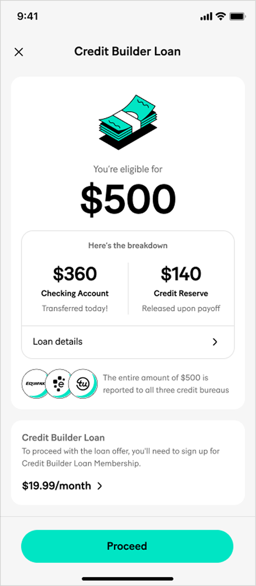
Offer screen + Membership onboarding combinedShowing $19.99/month membership together with $500 loan amount creates a money direction conflict. The $500 is what users receive, while $19.99 is what they pay.
1. The logic made sense, but it created a new problem
Membership is genuinely mandatory to take the loan, so combining them makes structural sense. But mixing "what you get" (loan) with "what you pay" (membership) on the same screen confused the value story.
2. Trust risk at the worst possible moment
Users on the offer screen are at their highest intent point. Introducing fee confusion here risks drop-off precisely when they are most likely to convert. This is too costly a trade-off.
Since membership couldn't share the offer screen without causing confusion, we looked at what else could be combined. Credit Reserve setup and Funds destination are directly related to the offer amounts already shown, a natural fit.
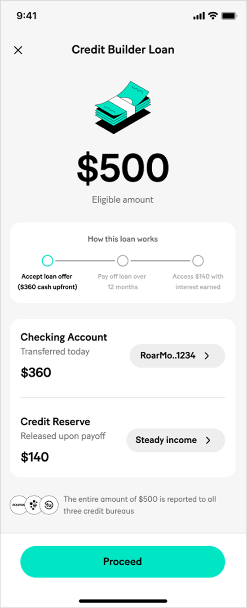
Offer screen + Credit Reserve setup + Funds destinationCombining offer + Credit Reserve setup + Funds destination into one screen removes 2 extra steps from the flow, keeps all amounts in the same "money you receive" frame, and lets pre-selected defaults do the work for most users.
1. Contextual connection, users are already looking at both amounts
The $360 and $140 are front and centre on the offer screen. Adding "where each goes" directly beneath is an answer to a question they're already asking, not a new ask.
2. No money direction confusion
Everything on this screen is about what the user receives and where it goes, there is no fee shown here. Membership is handled separately, keeping concerns cleanly separated.
3. Smart defaults make it a one-tap screen for most users
If the user has a RoarMoney account, it is pre-selected as the funds destination; otherwise we fall back to their linked bank account. For Credit Reserve, we default to the lowest-risk option. Both can be changed, but most users will simply tap Proceed, turning a 3-screen sequence into a single confirmation.
Decision 2: Streamlining the Experience Further
Reducing decisions through smart defaults
Decision 1 established the principle, pre-select RoarMoney as funds destination and the lowest risk option for Credit Reserve, so users who trust the defaults can proceed in one tap. We extended that same thinking to payment frequency. US payment cycles vary widely, and many users live paycheck to paycheck, making it critical that repayments align with when they actually have money. The question isn't whether to ask, but how to reduce the friction of answering it.
Funds destination
RoarMoney pre-selected, falls back to linked bank account.
Credit Reserve account
Lowest risk profile selected by default, eliminating the risk appetite questionnaire entirely.
Payment frequency
Detected from linked bank, no manual selection needed.
Users manually stepped through at least 3 separate screens with a CTA button on each, no progress indicator, users had no sense of how many steps remained or why the questions mattered.
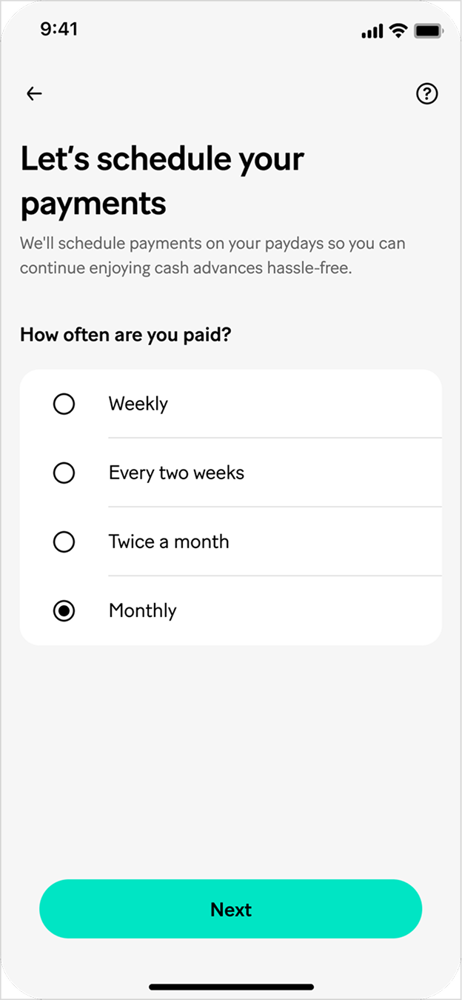
Select frequency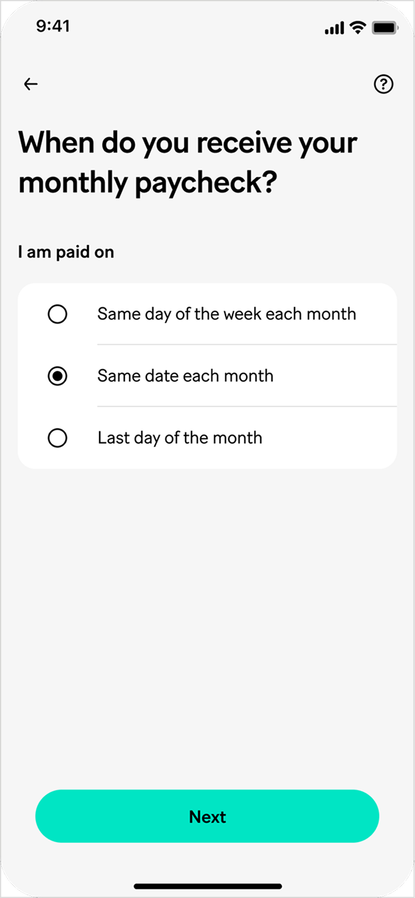
Follow up question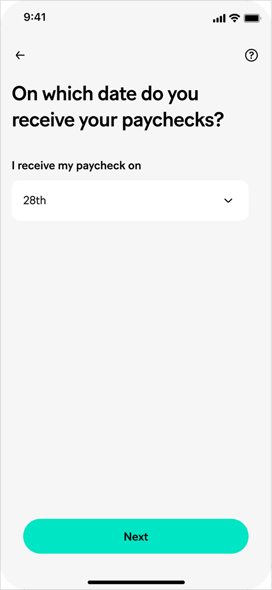
Specific dateThe steps were necessary but the experience felt like a form, not a flow. No progress indicator meant users had no sense of how much remained. A pinned "Next" CTA on every screen added an extra tap after every answer, making each step feel like a separate decision rather than part of one continuous setup.
1. CTA on every screen added unnecessary taps
Requiring an explicit "Next" tap after every selection turned a simple choice into a two-action interaction, select, then confirm. The extra step added friction without adding value.
2. No progress indicator, users couldn't see the end
Without knowing how many steps remained, users had no way to judge the effort ahead, increasing the likelihood of abandoning mid-flow at a point where they had already committed to the loan.
Progress bar added so users could see how many steps remained. CTA removed from the first two screens, tapping an answer automatically advances to the next step. "Submit" button is kept only on the final screen. Users can still go back and change their answer at any point via the back button.
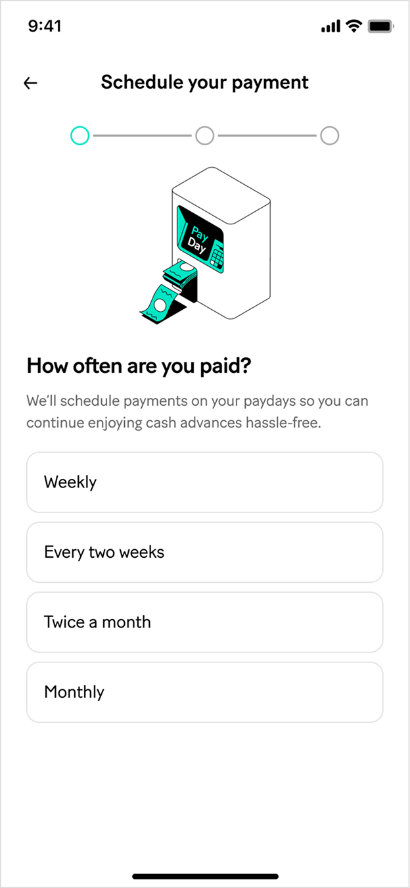
Select frequency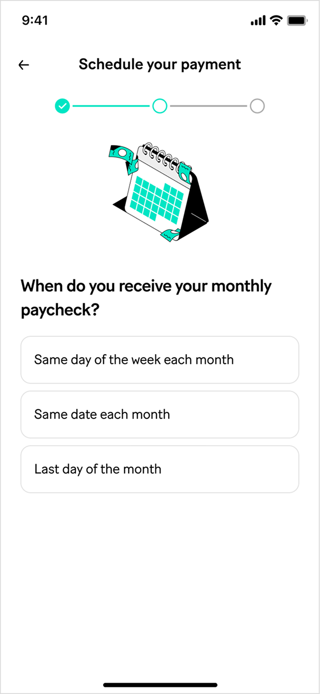
Follow up question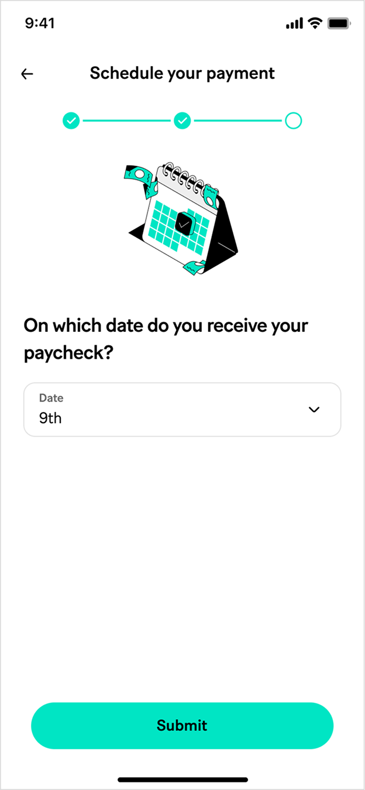
Specific dateAdding the progress bar and removing intermediate CTAs meaningfully reduced the perceived effort. However, users still answered all three questions manually with no help from data we already had.
1. Progress bar sets expectations upfront
Users can now see 3 steps ahead, knowing the end is close reduces the chance of abandoning mid-flow. The visual also reinforces that the questions are part of one connected setup.
2. Tap to advance feels like a conversation
Removing the CTA from the first 2 screens means selecting an answer immediately moves forward, one action instead of two. The back button still allows changes at any point.
Utilizing paycheck deposit patterns from the linked bank account, we detect the user's income frequency and pre-fill the entire repayment schedule. The 3-screen flow becomes a single confirmation.
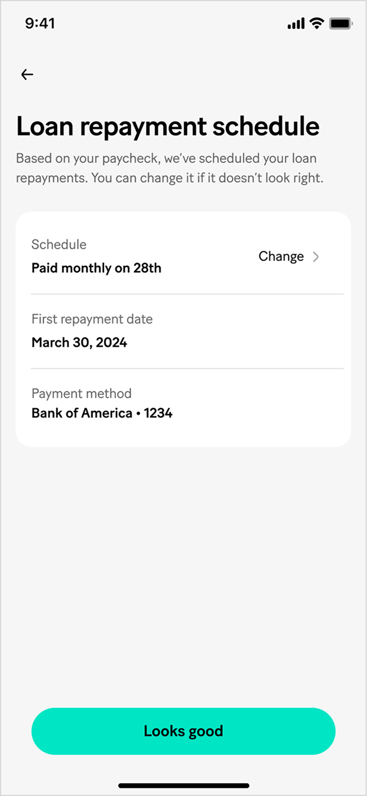
Single confirmation screenInstead of asking users to configure their schedule, we detect paycheck frequency from the linked bank account and pre-fill both frequency and first payment date. The screen shifts from configuration to confirmation. The accuracy is the same, the effort is not.
1. Data we already have does the work
The linked bank account, connected earlier in the flow, contains recurring deposit patterns. We infer frequency and payday without asking the user anything new.
2. Confirmation, not configuration
The screen shifts from "choose your schedule" to "does this look right?", a much lighter ask at a point where the user has already committed to the loan. The accuracy is the same, the effort is not.
3. Override routes back to the V2 manual flow
Tapping "Change" returns users to the full V2 selection flow, preserving control for users with irregular income, or who simply prefer to set it themselves.
Decision 3: User Trust & Expectation Setting
Communicating the Credit Reserve upfront, before it becomes a complaint
Part of the approved loan amount will be held until full repayment. It is a deliberate product mechanic, it protects against bad debt risk, which matters given that Credit Builder Loan users typically have lower credit scores. A significant source of user complaints was the gap between the total loan amount shown on the offer screen and the funds actually received. Users who saw $500 but received $360 felt misled, even though the $140 held in Credit Reserve was clearly stated on screen.
The original screen presented the loan flow as a text list, users who skimmed it received no visual understanding of the fund split. The new version walks users through each step with illustrations and dedicated screens, with step 3 explicitly showing the money moving into two separate destinations.
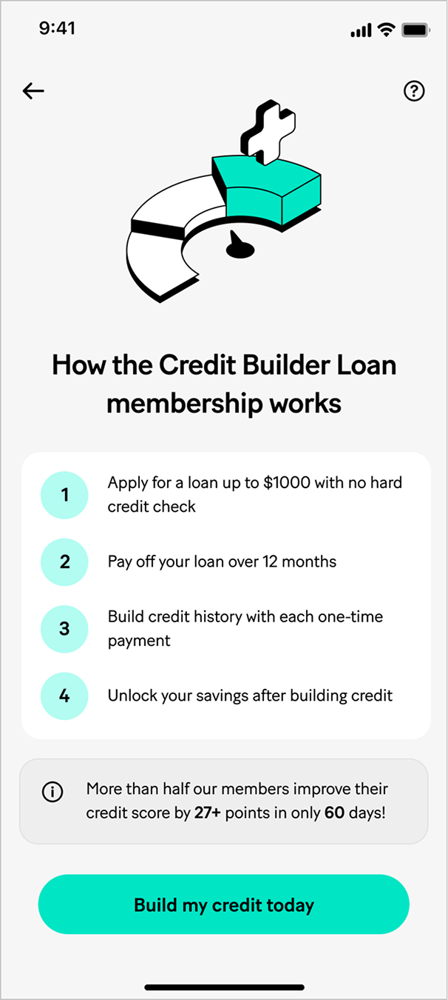
Before (Static)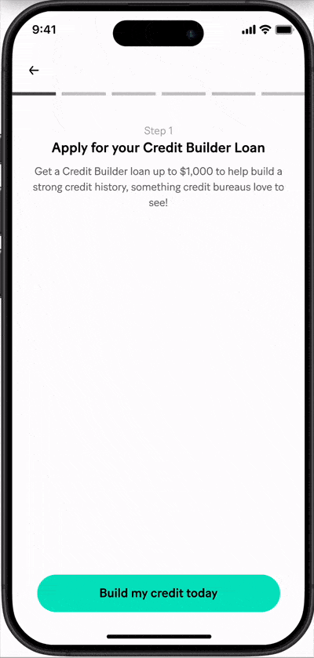
After (animated)The original list said "Unlock your savings after building credit", that is vague for users to connect it to a specific amount being held. The new version dedicates step 3 to a visual diagram showing the loan splitting into two destinations: "cash to the wallet today, and the remainder into Credit Reserve." It names both, shows both, and frames them as a benefit rather than a restriction, "building credit and savings at the same time."
1. Step 3 gives the fund split its own dedicated screen
Rather than a line in a list, the Credit Reserve concept gets a full screen with a diagram. Users engage with it as a step in the journey, not a footnote they can scroll past.
2. Visual metaphor makes the split concrete
The dollar sign splitting into a wallet and a piggy bank is immediately understood without reading. A user who skims the copy still absorbs the concept from the diagram, the two destinations are unmistakable.
3. Framed as benefit, not restriction
"Building credit and savings at the same time" positions the Credit Reserve as something working for the user, not against them. Step 5 reinforces this by showing the piggy bank unlocking, the held funds are a reward, not a loss.
For Fully Secured Loan users, where the entire loan amount goes into Credit Reserve and they receive $0 cash upfront, the offer screen was the first place they learned this. Seeing "$500" on the eligibility screen and then "$0 transferred today" on the offer screen was the sharpest version of the "where's my money?" complaint. We added a transition animation between these two screens to set the expectation before the details appear.
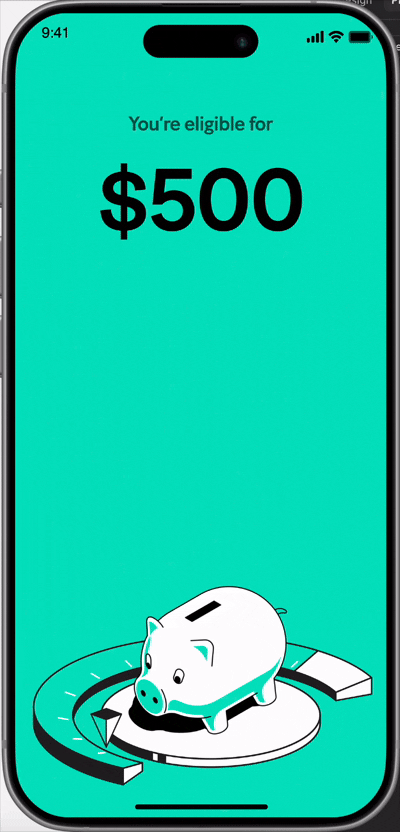
Transition animationThe transition animation creates a deliberate pause between the two screens, explicitly stating "Funds will be available after full loan repayment" with a visual of a piggy bank and a "12 mo" marker. By the time the details screen slides up, the $0 upfront is an expected confirmation rather than a shock.
1. Targeted specifically at Fully Secured Loan (FSL) users
This transition only plays for FSL, the loan type with the highest potential for the "where's my money?" complaint, since users receive no cash upfront. Partial loan users have a different animation that shows the fund split rather than the hold message.
2. Rive state machines serve the right animation per loan type
FSL users see the piggy bank hold animation. Partial loan users see a fund-split animation. Built in Rive to allow state-based switching without duplicating assets, the system always shows the animation that's accurate to the user's actual offer.
My Role
How the Project Unfolded
Discovery
Identified root causes from funnel analytics: a significant drop-off between screens driven by a 9-step flow, and a recurring complaint about the Credit Reserve amount, users receiving less cash than expected and feeling misled. Worked with data analysts to validate both problems before defining the brief.
Phase 1: UI lift only
Updated the landing screen visuals, copy, and animation without changing the underlying flow. This gave us a clean, controlled baseline to measure Phase 2 against, ensuring any lift from the flow redesign could be attributed to UX decisions, not just visual polish.
Phase 2: Refine the flow
Shortened the flow from 9 to 6 steps: combined the offer, Credit Reserve, and funds destination into one screen with smart pre-selections; replaced manual payment frequency setup with auto-detection; introduced the 5-step landing animation and FSL transition. A/B tested against Phase 1 at 50% rollout.
Navigating stakeholder alignment
Throughout both phases, designs went through multiple rounds of review across teams with different priorities, including legal & compliance, product marketing, engineering team and leadership team.
Result & handoff
Phase 2 delivered +1.4% loan takeup lift and a 5% improvement in post-offer conversion. Designs handed off with annotated specs and component documentation. Continued to iterate post-launch based on funnel data and user feedback.
Constraints We Designed Around
Not every idea made it to the final design, and the ones that didn't reveal as much about the project as the ones that did. These are the tradeoffs we made deliberately.
Wordy screens: tension between clarity and simplicity
Legal and product marketing needed to ensure users were fully informed at every step, membership terms, Credit Reserve behavior, payment authorizations. This is legitimate and necessary, especially for a financial product with regulatory obligations. But more required text meant longer screens, more scrolling, and lower comprehension, the opposite of what we were trying to achieve with the flow redesign.
Simplest Credit Reserve Account solution was off the table: contractual constraints
The cleanest solution to the Credit Reserve onboarding complexity was to remove it entirely, routing Credit Reserve funds directly into users' RoarMoney account instead of a separate Managed Investing product. Most Credit Builder Loan users already have a RoarMoney account, and funds held there would eliminate the CRA setup flow, the risk questionnaire, and the confusion about where money goes. Straightforward from a UX perspective, but blocked by a contractual arrangement with the Managed Investing provider.
Fully Secured Loan: communicating $0 upfront without hurting conversion
For Fully Secured Loan users, the most honest design would prominently surface "$0 cash upfront" early in the flow, making it impossible to miss. But product was concerned that leading with a zero-dollar amount would deter users from completing the application, reducing conversion for a loan type that still genuinely benefits them. Both concerns were valid, and they pulled in opposite directions.
What's Next
Even with the refinements shipped, there's room to go further. These are the areas actively being explored.